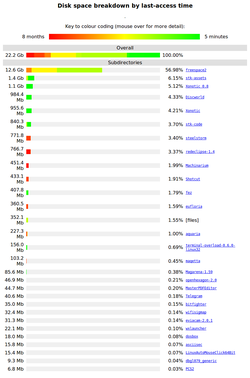

agedu
Dieser Artikel wurde für die folgenden Ubuntu-Versionen getestet:
Ubuntu 14.04 Trusty Tahr
Zum Verständnis dieses Artikels sind folgende Seiten hilfreich:
 agedu
agedu  ist ein Kommandozeilenprogramm, das wie du den Speicherplatzverbrauch (disk usage) analysiert. Im Gegensatz zu
ist ein Kommandozeilenprogramm, das wie du den Speicherplatzverbrauch (disk usage) analysiert. Im Gegensatz zu du zeigt es jedoch auch an, wann die Daten zum letzten Mal verwendet wurden. Dies ermöglicht es, Dateien zu finden, die viel Platz verbrauchen und länger nicht mehr verwendet wurden.
Installation¶
Das Programm kann direkt aus den offiziellen Paketquellen installiert werden [1]:
agedu (universe)
 mit apturl
mit apturl
Paketliste zum Kopieren:
sudo apt-get install agedu
sudo aptitude install agedu
Das Programm kann dann sofort aus dem Terminal [2][3] gestartet werden.
Bedienung¶

Da agedu nicht nur Dateigrößen beachtet, sondern auch Zugriffszeiten, muss man ein Verzeichnis zunächst mit dem Programm scannen. Dazu verwendet man den Schalter -s, der ein Verzeichnis als Argument erwartet:
agedu -s ~/Downloads
Um sich den Report danach anzeigen zu lassen, verwendet man den Schalter -w, der einen lokalen Webserver startet und dort den Report als HTML-Seite bereitstellt:
agedu -w
Alternativ kann man auch einen Text oder HTML-Report ausgeben. Diesen kann man später im Webbrowser aufrufen oder über einen Webserver bereitstellen. Wenn man für alle Unterordner einen Report erstellen möchte, empfiehlt es sich, einen neuen Ordner zu erstellen:
mkdir ~/htmlreport cd ~/htmlreport agedu --files -d max -H ~/Downloads
Optionen¶
| Optionen von agedu | |
| Verfügbare Optionen | Bedeutung |
-s, --scan | Scanne ein Verzeichnis um eine Index-Datei zu erstellen |
-f, --filename | Spezifiziert den Dateinamen für die Indexdatei (.dat) |
--files | Zeige Speicherverbrauch einzelner Dateien |
-H, --html | Erstelle einen HTML-Report |
--cross-fs | Scannt über Dateisystemgrenzen hinweg |
-d, --depth | Ordnertiefe für HTML- und Text-Reporte |
-w, --web | Starte einen temporären Webserver zum Anzeigen des HTML-Reports |
-t, --text | Erstelle (anstelle von HTML) einen Text-Report |
-R, --remove | Entferne die .dat-Datei, ohne deren Namen zu wissen |
-h, --help | Kurze Optionsübersicht anzeigen |
-V, --version | Version anzeigen |
Mehr Information sind der Manpage von agedu zu entnehmen.
- Erstellt mit Inyoka
-
 2004 – 2017 ubuntuusers.de • Einige Rechte vorbehalten
2004 – 2017 ubuntuusers.de • Einige Rechte vorbehalten
Lizenz • Kontakt • Datenschutz • Impressum • Serverstatus -
Serverhousing gespendet von